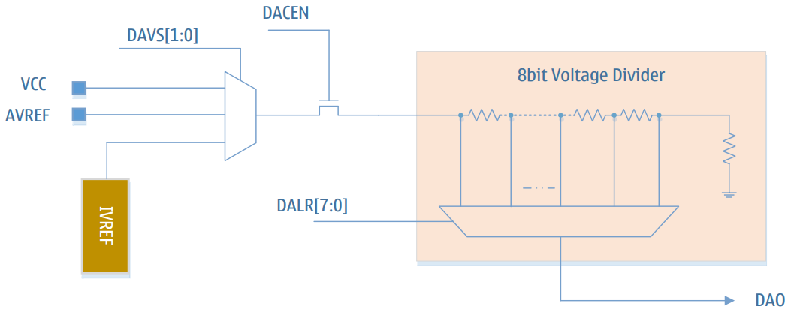

Цифро-аналоговый преобразователь (ЦАП)
8-битный цифро-аналоговый выход
Выход ЦАП может использоваться как опорный вход аналогового компаратора
Поддержка выхода ЦАП на внешний вывод (DAO)
Выбор источника питания делителя: VCC / AVREF / IVREF
Обзор
LGT8FX8P имеет встроенный 8-битный программируемый цифро-аналоговый преобразователь (ЦАП). В качестве источника опорного напряжения для ЦАП может быть выбрано:
напряжение системного питания,
внутренний источник опорного напряжения,
внешний вход AVREF.
Выход ЦАП может использоваться как вход внутренних компараторов AC0/AC1, а также выводиться непосредственно на внешний вывод микроконтроллера для использования в качестве внешнего опорного напряжения. При выводе ЦАП на внешний вывод он не может непосредственно использоваться для нагрузки — требуется буферная схема, такая как повторитель напряжения или аналогичная. Внутренняя структура ЦАП показана на рисунке:

Описание регистров
DACON – Регистр управления ЦАП
Адрес: 0xA0 |
Значение по умолчанию: 0x00 |
|---|
Бит |
7 |
6 |
5 |
4 |
3 |
2 |
1 |
0 |
|---|---|---|---|---|---|---|---|---|
Имя |
- |
- |
- |
- |
DACEN |
DAOE |
DAVS1 |
DAVS0 |
Доступ |
- |
- |
- |
- |
R/W |
R/W |
R/W |
R/W |
Описание битов
Бит |
Имя |
Описание |
|---|---|---|
7:4 |
- |
Зарезервировано |
3 |
DACEN |
Бит разрешения ЦАП: |
2 |
DAOE |
Управление выводом ЦАП на внешний порт: |
1 |
DAVS1 |
Биты выбора источника опорного напряжения ЦАП (старший) |
0 |
DAVS0 |
Биты выбора источника опорного напряжения ЦАП (младший). |
Выбор источника опорного напряжения
DAVS[1:0] |
Опорное напряжение |
|---|---|
00 |
Напряжение системы VCC |
01 |
Внешний вход AVREF |
10 |
Внутренний опорный источник |
11 |
Отключить источник опорного напряжения ЦАП |
DALR – Регистр данных ЦАП
Адрес: 0xA1 |
Значение по умолчанию: 0x00 |
|---|
Бит |
7:0 |
|---|---|
Имя |
DALR[7:0] |
Доступ |
R/W |
Описание битов
Бит |
Имя |
Описание |
|---|---|---|
7:0 |
DALR |
Регистр данных ЦАП. Устанавливает величину |
Формула выходного напряжения:
V_DAO = V_REF * (DALR + 1) / 256, где:
V_DAO – выходное аналоговое напряжение ЦАП,
V_REF – источник опорного напряжения ЦАП (выбирается битами DAVS в регистре DACON).